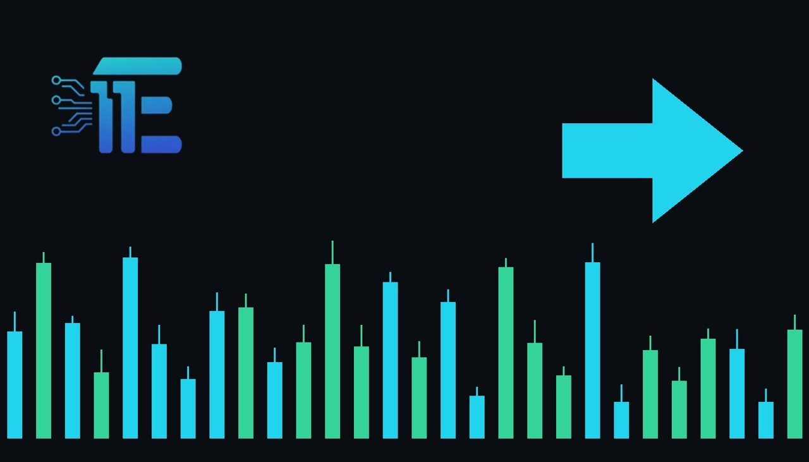

Federal Reserve Issues New FOMC Statementធនាគារកណ្តាល Fed ចេញសេចក្តីថ្លែងការណ៍ FOMC ថ្មី
XAU/USD impact: ◆ Mixedផលប៉ះពាល់លើ XAU/USD: ◆ ចម្រុះ

The Federal Reserve has released its official FOMC monetary policy statement. Market participants are closely analyzing the text for shifts in interest rate expectations and the broader outlook for the US dollar.
ធនាគារកណ្តាល Fed បានចេញផ្សាយសេចក្តីថ្លែងការណ៍គោលនយោបាយរូបិយវត្ថុ FOMC ផ្លូវការរបស់ខ្លួន។ អ្នកចូលរួមទីផ្សារកំពុងពិនិត្យយ៉ាងដិតដល់លើខ្លឹមសារនេះ ដើម្បីស្វែងរកការផ្លាស់ប្តូរក្នុងការរំពឹងទុកអត្រាការប្រាក់។
The Federal Reserve has officially issued its latest FOMC statement, outlining the central bank's current monetary policy stance. As one of the most closely watched macro events for financial markets, the release details policy decisions that shape the future trajectory of US borrowing costs.
ធនាគារកណ្តាល Fed បានចេញសេចក្តីថ្លែងការណ៍ FOMC ចុងក្រោយបង្អស់របស់ខ្លួនជាផ្លូវការ ដោយបង្ហាញពីជំហរគោលនយោបាយរូបិយវត្ថុបច្ចុប្បន្នរបស់ធនាគារកណ្តាល។ ក្នុងនាមជាព្រឹត្តិការណ៍ម៉ាក្រូសេដ្ឋកិច្ចដ៏សំខាន់មួយសម្រាប់ទីផ្សារហិរញ្ញវត្ថុ ការផ្សាយនេះលម្អិតអំពីការសម្រេចចិត្តគោលនយោបាយដែលកំណត់មាគ៌ានាពេលអនាគតនៃថ្លៃដើមនៃការខ្ចីប្រាក់នៅសហរដ្ឋអាមេរិក។
For XAU/USD traders, FOMC communications act through key transmission channels such as the US dollar, Treasury bond yields, and prevailing interest rate expectations. Shifts in the tone regarding inflation and monetary easing directly impact the opportunity cost of holding non-yielding bullion, while also influencing currency valuations globally.
សម្រាប់អ្នកជួញដូរ XAU/USD សេចក្តីថ្លែងការណ៍ FOMC គឺមានសារៈសំខាន់តាមរយៈបណ្តាញបញ្ជូនដូចជា ដុល្លារអាមេរិក អត្រាផលបត្របំណុលរតនាគារ និងការរំពឹងទុកអត្រាការប្រាក់បច្ចុប្បន្ន។ ការផ្លាស់ប្តូរក្នុងសំឡេងស្តីពីអតិផរណា និងការបន្ធូរបន្ថយរូបិយវត្ថុប៉ះពាល់ដោយផ្ទាល់ដល់ថ្លៃដើមឱកាសនៃការកាន់កាប់មាស ខណៈពេលដែលក៏មានឥទ្ធិពលលើតម្លៃរូបិយវត្ថុជាសកលផងដែរ។
If the statement signals a more cautious approach to policy easing or points toward sustained high rates, it typically strengthens the US dollar and weighs on gold. Conversely, any dovish tilt hinting at accelerated rate cuts can suppress yields and the dollar, offering strong support to precious metals.
ប្រសិនបើការសេចក្តីថ្លែងការណ៍នេះបង្ហាញពីវិធីសាស្ត្រប្រុងប្រយ័ត្នចំពោះការបន្ធូរបន្ថយគោលនយោបាយ ឬបង្ហាញពីអត្រាការប្រាក់ខ្ពស់ជាប់លាប់ វាជាទូទៅធ្វើឱ្យដុល្លារអាមេរិកមានភាពរឹងមាំ និងដាក់សម្ពាធលើមាស។ ផ្ទុយទៅវិញ រាល់ការទន់ភ្លន់ដែលបង្ហាញពីការកាត់បន្ថយអត្រាការប្រាក់លឿនជាងមុន អាចទម្លាក់អត្រាផលបត្របំណុលនិងដុល្លារ ដោយផ្តល់ការគាំទ្រយ៉ាងខ្លាំងដល់លោហៈមានតម្លៃ។
Market participants should monitor subsequent central bank commentary and incoming economic data releases for further confirmation of the policy path. Keeping a close eye on the reaction in US yields and currency strength remains essential for assessing immediate price direction.
អ្នកចូលរួមទីផ្សារគួរតែតាមដានមតិយោបល់របស់ធនាគារកណ្តាលជាបន្តបន្ទាប់ និងទិន្នន័យសេដ្ឋកិច្ចដែលនឹងចេញផ្សាយ ដើម្បីទទួលបានការបញ្ជាក់បន្ថែមអំពីមាគ៌ាគោលនយោបាយ។ ការរក្សាការតាមដានយ៉ាងជិតស្និទ្ធចំពោះប្រតិកម្មនៃអត្រាផលបត្របំណុលអាមេរិក និងកម្លាំងរូបិយវត្ថុនៅតែមានសារៈសំខាន់សម្រាប់ការវាយតម្លៃទិសដៅតម្លៃភ្លាមៗ។
Key takeawaysចំណុចសំខាន់ៗ
- The Federal Reserve has released its official FOMC monetary policy statement.
- ធនាគារកណ្តាល Fed បានចេញសេចក្តីថ្លែងការណ៍គោលនយោបាយរូបិយវត្ថុ FOMC ផ្លូវការ។
- FOMC decisions impact gold through the US dollar, Treasury yields, and rate expectations.
- ការសម្រេចចិត្តរបស់ FOMC ប៉ះពាល់ដល់មាសតាមរយៈដុល្លារអាមេរិក អត្រាផលបត្របំណុល និងការរំពឹងទុកអត្រាការប្រាក់។
- Traders should monitor subsequent policy commentary and broader macroeconomic data.
- អ្នកជួញដូរគួរតែតាមដានមតិយោបល់គោលនយោបាយបន្តបន្ទាប់ និងទិន្នន័យម៉ាក្រូសេដ្ឋកិច្ចទូលំទូលាយ។
Original commentary by THE MARKET CODE, based on public reporting from FRB: Press Release - Monetary Policy. Written with the help of AI. Educational only, not financial advice.
មតិវិភាគដើមដោយ THE MARKET CODE ផ្អែកលើការរាយការណ៍សាធារណៈពី FRB: Press Release - Monetary Policy។ សរសេរដោយមានជំនួយពី AI។ មាតិកាអប់រំប៉ុណ្ណោះ មិនមែនជាដំបូន្មានហិរញ្ញវត្ថុទេ។